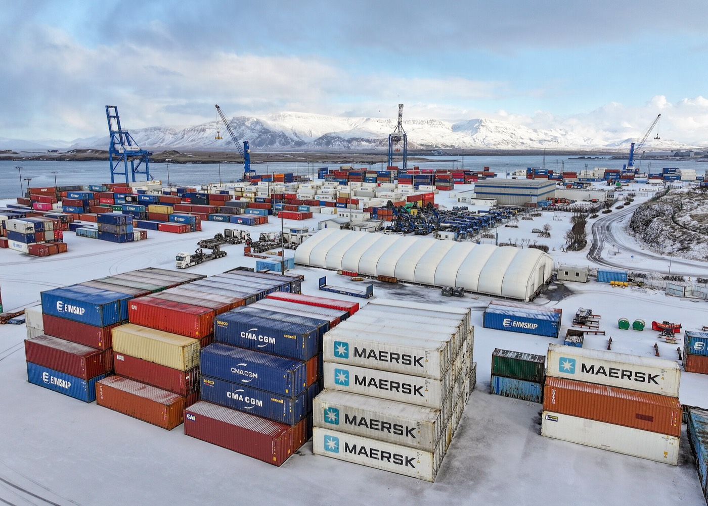
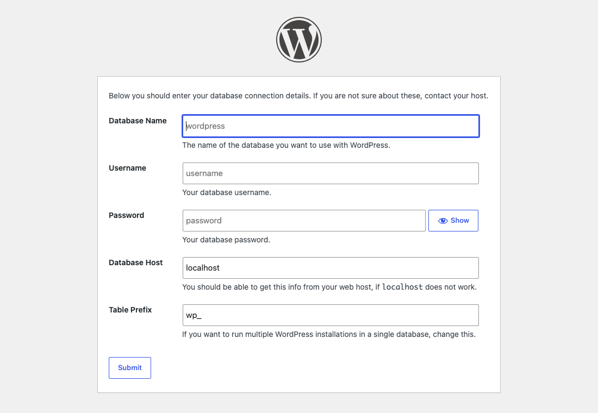
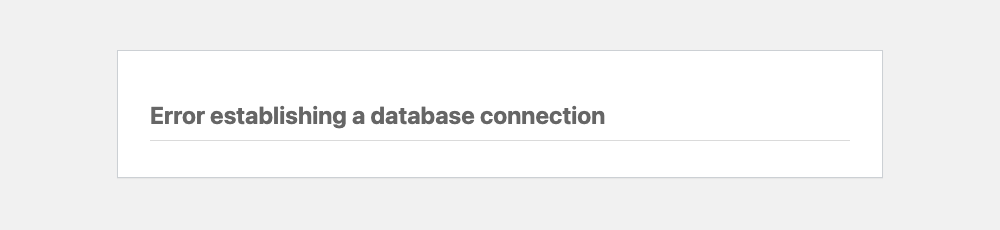
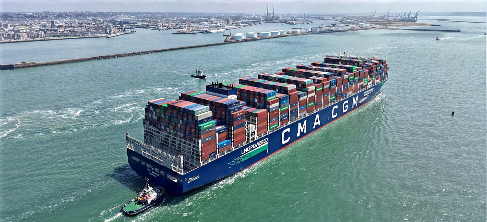

Companion to the Docker & Kubernetes labs · October 2026
Container Field Guide
Every idea the labs touch, explained properly: what an image really is, why localhost lies to you inside a container, where your data goes when a container dies, and how Kubernetes turns "run three of these" into a promise it keeps. Keep it open beside the labs.
Docker 27+Compose v2WordPress 7.1 · MySQL 8.4Labs 01–05
~/docker-k8s-labs · zsh
$ docker compose ps --format "table {{.Service}}\t{{.Status}}"
SERVICE STATUS
db Up 2 min (healthy)
wp-a Up 2 min
wp-b Up 2 min
whoami Up 1 min (healthy)×3$ kubectl get pods # …same app, next chapterNAME READY STATUS
wordpress-7c9d8-x2k4q 1/1 Running
wordpress-7c9d8-p8n1z 1/1 Running
whoami-5f6b7-9qv2c 1/1 Running
whoami-5f6b7-m3tt8 0/1 ContainerCreating
mysql-0 1/1 Running
What you'll build across five labs, how to read this guide, and the one sentence to remember if you forget everything else.
The one sentence
Whole course
A container is your app plus everything it needs to run, packed into a standard box that runs the same way on any machine with a container engine.
Everything else is detail about building the box (Dockerfiles), storing the box (registries), connecting boxes (networks), keeping the stuff that must outlive a box (volumes), and, eventually, running thousands of boxes across hundreds of machines without a human babysitting them (Kubernetes).
Same box. Any ship. Any port.
The course on one screen
Each lab adds one layer. Labs 01–02 are the originals, 03–04 build advanced concepts on top of them, and 05 is a hint-only challenge that uses all of it.
01Hello, WordPress30 min · guided
Pull an image, run it with a port mapping, run a second copy, break a port on purpose.
One image, many containers.
02Meets MySQL40 min · challenge mode
A private network, env-var configuration, DNS by container name, and the shock of data loss.
Containers find each other by name.
03Data that survives60 min · guided + solo
Named volumes, bind mounts, Compose, .env, healthchecks, restart policies.
State lives outside the container.
04Build your own75 min · guided + solo
Dockerfiles, layer caching, a 60× multi-stage diet, non-root, and two WordPress replicas.
Build once, configure everywhere.
05Rescue mission90 min · hints only
A broken newsroom stack with six planted bugs, a staging site, scaling, and a 1.2 GB image to slim.
Debug like it's 06:47 on a Monday.
☸Next: KubernetesPart 2 of this guide
Pods, Deployments, Services, Ingress, ConfigMaps, volumes, and how your Compose file translates.
From "run it" to "keep it running".
How to read an entry
Every concept follows the same shape: a name, a one-line definition in larger type, the explanation, then up to four kinds of box:
Analogy
A picture from everyday life that makes the idea stick.
Tidbit
History, trivia or a detail that's fun to know and occasionally wins arguments.
Trap
The mistake almost everyone makes once. Read these twice.
Try it
A one-minute experiment you can run right now to see the idea with your own eyes.
Chips like Lab 03 tell you where the concept shows up in the labs.
Chapter 02 · Ground school
Why containers?
The problem is older than software: moving things between places that each do things differently.
"It works on my machine"
The problem
Software depends on far more than its own code, and every machine has a slightly different "far more".
Your app needs a specific language runtime, specific library versions, OS packages, config files, environment variables and a particular file layout. Your laptop has one combination; the test server has another; production has a third. Each difference is a chance for "works here, breaks there". Before containers, teams fought this with long setup documents, configuration-management scripts and a lot of late nights.
A container image ships the app and its whole user-space environment together. The only thing it borrows from the machine it lands on is the Linux kernel. So if it runs on your laptop, the same bytes run in production.
The shipping container, literally
Analogy

Containers from a dozen companies, one crane, one stacking system. Eimskip container terminal, Port of Reykjavík. Photo: Quintin Soloviev, Wikimedia Commons, CC BY 4.0.
Analogy
Before the 1950s, ships were loaded piece by piece: sacks, barrels and crates, each handled by hand, each needing different care. The steel shipping container fixed the interface, not the cargo. Every box has the same size and the same corner fittings, so any crane, ship, truck or train can move any box without knowing what's inside. Docker did the same for software: any machine with a container engine can run any image without knowing whether it's Java, Python or WordPress inside.
Tidbit
In April 1956, trucking entrepreneur Malcom McLean sent the converted tanker Ideal X from Newark to Houston carrying 58 containers. Loading costs reportedly fell from about $5.86 a ton to under 16 cents. Docker's whale logo carrying stacked containers is a direct nod to that story.
What you actually get
Benefit
What it means day to day
You see it in
Consistency
The same image runs on every laptop, CI server and cluster node.
Lab 01: WordPress with no PHP install
Isolation
Each container has its own filesystem, process list and network. Two apps can both "own" port 80.
Lab 01, Step 5
Speed
Containers start in milliseconds to seconds; there's no OS to boot.
Every docker run
Density
Dozens of containers fit where a few VMs would.
Lab 05: seven containers on a laptop
Disposability
Delete and recreate at will, as long as data lives in volumes.
Lab 03: the murder test
Declarative setup
The whole environment is a file in Git that can be reviewed.
Lab 03: compose.yaml
Chapter 03 · Ground school
Containers vs. VMs
Both isolate workloads. They draw the line at different floors of the building.
Where the line is drawn
Core idea
A virtual machine virtualises the hardware and runs a whole guest OS. A container virtualises the operating system and shares the host's kernel.
Each VM carries a full guest OS (amber). Containers skip that floor entirely and share the host's kernel, which is why they're smaller and start almost instantly.
Virtual machine
Container
Typical size
Gigabytes
Megabytes (our whoami: 5.4 MB)
Start time
Tens of seconds to minutes
Milliseconds to seconds
Kernel
Its own
Shared with the host
Isolation strength
Very strong (hardware boundary)
Strong, but shares a kernel
Can run a different OS?
Yes (Windows on Linux, etc.)
Linux containers need a Linux kernel
Tidbit
So how does Docker run Linux containers on your Mac or Windows laptop? Docker Desktop quietly runs one small Linux VM and puts all your containers inside it. That's why cat /etc/os-release inside a WordPress container says Debian even on a MacBook (Lab 01, Step 7). In the cloud, it's common to run containers inside VMs. The two technologies are partners, not rivals.
Analogy
VMs are detached houses: each has its own foundation, plumbing and wiring. Containers are apartments in one building: private front doors and furniture, but shared foundations and water mains. You can build apartments much faster, and fit far more of them on the same land.
The Linux magic underneath
Deeper
A container isn't a single kernel feature. It's an ordinary Linux process wrapped in several of them:
Namespaces control what a process can see: its own process list (PID 1 is your app), its own network interfaces and ports, its own hostname, its own filesystem root.
cgroups (control groups) control what it can use: CPU share, memory limit, I/O.
Union filesystems (overlayfs) stack read-only image layers with one thin writable layer on top.
Try it
Run docker run --rm alpine ps aux. You'll see exactly one process (ps itself) as PID 1. The container can't see anything else running on your machine. That's the PID namespace at work.
Part 1 · Labs 01–05
Docker
Images, containers, ports, networks, volumes, Dockerfiles and Compose. Everything you need to build, run and connect containers on one machine.
Chapter 04 · Docker
Images & containers
The two words people mix up most. Get this pair straight and half of Docker falls into place.
Image
Lab 01
A read-only, layered template: a filesystem snapshot plus metadata saying how to start it.
An image contains everything the app needs (binaries, libraries, config defaults, the app itself) and instructions like "listen on port 80" and "run apache2-foreground when started". It never changes once built. A new version is a new image.
Container
Lab 01
A running (or stopped) instance of an image: the image's layers plus a thin writable layer, an isolated process, and its own network identity.
One image, many containers. Each container shares the image's read-only layers (stored once on disk) and gets its own private writable layer on top.
Analogy
An image is a recipe card; a container is a dish cooked from it. You can cook the same recipe ten times for ten tables. Spilling sauce on one plate doesn't touch the recipe or the other plates. Programmers: an image is a class, a container is an object.
Trap
"I deleted the container, so the image is gone." No: docker rm deletes a container, docker rmi deletes an image, and Docker won't remove an image while any container (even a stopped one) still uses it.
Layers
Lab 01Lab 04
An image is a stack of filesystem diffs. Each layer records only what changed relative to the one below.
That's why docker pull prints several lines that complete independently, and why the second image you pull with the same base downloads in a flash: layers are identified by a content hash and stored once, no matter how many images share them. When a container writes a file, it's copied up into the container's own writable layer (copy-on-write). The image never changes.
Try it
docker history wordpress lists every layer, the instruction that made it, and its size. docker system df shows how much disk images, containers and volumes use in total.
Chapter 05 · Docker
Registries & tags
Where images live, how they're named, and why "latest" is the most dangerous word in this guide.
Registry
Lab 01Lab 04
A server that stores and distributes images: the "app store" your engine pulls from and pushes to.
Docker Hub (docker.io) is the default. Others include GitHub Container Registry (ghcr.io), Amazon ECR, Google Artifact Registry, Azure Container Registry, and self-hosted options like Harbor. Companies usually run a private registry so their images (and secrets baked into them by accident) aren't public.
Docker Official Images live under the special library/ namespace, shown as _ in URLs like hub.docker.com/_/wordpress. They're curated, documented, rebuilt for security patches and published for multiple CPU architectures. Prefer them to random uploads with similar names.
Anatomy of an image name
Reference
ghcr.ioregistry · default docker.io
/
acmenamespace · user or org (library for official)
/
whoamirepository
:
v2tag · default latest
@sha256:9f86d0…digest · optional, exact bytes
So plain wordpress is really docker.io/library/wordpress:latest. The lab's wordpress:7.1-php8.3-apache pins WordPress 7.1, PHP 8.3, served by Apache.
Tags vs. digests
Lab 03
A tag is a human-friendly label that can move. A digest is a hash of the image's contents that can never change.
Trap
latest doesn't mean newest, and it doesn't mean stable. It's just the tag you get when you don't specify one, and maintainers repoint it whenever they like. In October 2026, mysql:latest was MySQL 26.7. A database volume created by one major version may refuse to start under another. That's why Lab 03 switches to mysql:8.4, MySQL's long-term-support line.
Tidbit
Tags pin intent; digests pin bytes. Production teams often deploy with both (mysql:8.4@sha256:…), so a reader sees the version and the engine guarantees exactly the same image every time. Tools like Renovate or Dependabot then open pull requests when a new digest appears.
Chapter 06 · Docker
Anatomy of docker run
The one command you'll type more than any other, decoded flag by flag, plus the life story of every container.
Order matters: flags go before the image name. Anything after the image is passed to the container as its command. docker run wordpress -p 8080:80 doesn't map a port. It tries to run a program called -p.
The container lifecycle
Lab 01
A stopped container still exists, with its writable layer intact, until you rm it. docker ps shows running containers; docker ps -a shows them all.
Tidbit
docker stop sends SIGTERM, waits 10 seconds for a graceful shutdown, then sends SIGKILL. If your container always takes exactly 10 seconds to stop, your app probably isn't receiving the signal, often because CMD uses shell form and /bin/sh is PID 1. Lab 05's boss level fixes exactly that with exec form.
Chapter 07 · Docker
Port mapping
How traffic gets from your browser into a container that lives on its own private network.
-p HOST:CONTAINER
Lab 01
Publishing a port opens a door on your machine and forwards everything that arrives to a port inside a container.
Both containers use port 80 internally without clashing, because each has its own network namespace. Host ports must be unique, because your laptop has only one.
Analogy
An office building with one street address (your laptop) and many companies inside (containers). Every company has a "reception desk 80" of its own. The building's mailroom (-p) knows that letters for suite 8080 go to company A's reception and suite 8081 to company B's.
Trap
The left number is always your machine.-p 80:8080 means "my port 80 → container port 8080", which fails silently if nothing in the container listens on 8080. That exact bug is planted in Lab 05.
"Port is already allocated"
Lab 01Lab 05
Two containers can't publish the same host port. Docker creates the second container but can't start it, leaving it in the Created state. Fix: pick a different host port, or stop whatever holds it (docker ps, or lsof -i :8080 on macOS/Linux).
This is also why you can't --scale a Compose service with a fixed host port to three replicas (Lab 05, Mission 4). Kubernetes avoids the problem entirely: pods are reached through a Service, not through host ports.
The 127.0.0.1 trap
Lab 05
An app that listens only on 127.0.0.1 inside a container can't be reached through a port mapping, because forwarded traffic arrives on the container's network interface, not its loopback.
The symptom is maddening: curl localhost:5000 from your laptop gets "Empty reply from server", yet docker exec … curl localhost:5000 inside the container works perfectly. The fix is to bind to 0.0.0.0 ("all interfaces"). Many dev servers (Flask, Vite, Rails) default to localhost for safety, so this bites everyone once.
Chapter 08 · Docker
Environment variables
The universal configuration knob for containers, and the reason one image can serve dev, test and production.
-e KEY=value
Lab 02
Images read their configuration from environment variables, so you change behaviour at run time without rebuilding.
Each image documents the variables it understands. mysql creates a database and user from MYSQL_DATABASE, MYSQL_USER and MYSQL_PASSWORD; wordpress writes its wp-config.php from WORDPRESS_DB_*. In Lab 02, setting those four variables is what makes WordPress skip this screen entirely:

Without WORDPRESS_DB_* variables (Lab 01), WordPress asks for database details. Note the default host is localhost, which inside a container is wrong. See Networks & DNS.
Tidbit
This is principle III of the Twelve-Factor App manifesto (2011): "Store config in the environment." The same build artifact moves through every environment; only the variables change. Kubernetes builds on it with ConfigMaps and Secrets, which become environment variables in your pods.
Trap
Initialisation variables only run once.MYSQL_PASSWORD and friends are applied the first time MySQL starts with an empty data directory. Change them later and nothing happens to an existing volume, but WordPress picks up the new password and can no longer log in. (Lab 03, Part 5.)
Never bake real secrets into an image with ARG or ENV: they're readable by anyone with the image via docker history or docker inspect. Pass secrets at run time, or use BuildKit's --secret mounts for build-time credentials.
Chapter 09 · Docker
Networks & DNS
How containers find each other, and why localhost is the most misleading word in container land.
User-defined networks
Lab 02
A network you create gives its containers private connectivity and a built-in DNS server that resolves container names to IPs.
Only WordPress is published to your laptop. MySQL has no -p, so it's reachable only by containers on my-wp, which is exactly what you want for a database.
Trap
Inside a container, localhost means that container. Not your laptop, and not the database container next door. WordPress's default DB host of localhost fails because MySQL isn't running inside the WordPress container. Use the other container's name.
Tidbit
Docker's built-in bridge network (where containers land if you don't pick one) does not provide name resolution, only IPs. That's a historical leftover; Docker recommends user-defined networks for everything. Compose creates one per project automatically, which is why services find each other by service name without you doing anything.

The most common screen in Labs 02–05. It means one of four things: wrong host name, not on the same network, wrong credentials, or MySQL still booting (wait 20 seconds).
Try it
docker exec wordpress getent hosts wp-mysql shows the IP Docker's DNS hands out. Then docker network inspect my-wp lists every container on the network with its address.
Chapter 10 · Docker
Volumes & bind mounts
Containers are disposable. Your data isn't. This chapter is about keeping the two apart.
Three places data can live
Lab 02Lab 03
By default a container writes into its own writable layer, which is deleted with the container. Mounts redirect a path to storage that outlives it.
Lab 03's setup: MySQL data in a named volume; a PHP config file bind-mounted read-only from your laptop.
Writable layer
Named volume
Bind mount
Survives docker rm
No
Yes
Yes
Managed by
Docker, per container
Docker
You (a normal host path)
Syntax
(default)
-v name:/path
-v "$PWD/file":/path
Best for
Scratch files
Databases, uploads, app state
Config files, live-reload source code
Portable?
n/a
Yes
Depends on host paths
Analogy
A container is a hotel room: housekeeping wipes it after every guest. A named volume is the hotel safe-deposit box: the hotel manages it, and it's still there next stay. A bind mount is bringing your own suitcase: your stuff, from your house, sitting in the room.
Trap
Mount at the path the app actually uses. A volume at /var/lib/mysql-data looks responsible but saves nothing, because MySQL writes to /var/lib/mysql. Lab 05, Mission 2 is built around this exact bug. Check the image docs for the data directory.
Trap
If the host path in a bind mount doesn't exist, Docker creates a directory with that name. Mount ./uploads.ini before creating the file and you'll get a folder called uploads.ini and a confused PHP.
Stateless vs. stateful
Lab 03Lab 04
A stateless container keeps nothing it can't afford to lose; a stateful one owns data that must persist.
In Lab 03 you delete and recreate the WordPress container, and the site is still installed, because every post, user and setting lives in MySQL. That makes the WordPress container almost stateless, and stateless containers are trivially easy to scale, replace and move. Lab 04 proves it by running two WordPress replicas against one database. It's the single most important design idea to carry into Kubernetes.
Chapter 11 · Docker
Dockerfiles & layers
The recipe for an image, why line order decides whether builds take seconds or minutes, and what to keep out.
Dockerfile
Lab 04
A text file of instructions, run top to bottom, where each instruction that changes the filesystem produces a new layer.
Instruction
What it does
Layer?
FROM
Start from a base image (or scratch, the empty image)
Base
WORKDIR
mkdir -p + cd for the following instructions
Tiny
COPY
Copy files from the build context into the image
Yes
RUN
Execute a command at build time and keep the result
Yes
ENV / ARG
Run-time / build-time variables
Metadata
USER
Switch to a non-root user for following steps and at run time
Metadata
EXPOSE
Documents the listening port. It does not publish it; -p does.
Metadata
HEALTHCHECK
Command Docker runs periodically to judge health
Metadata
CMD
Default command; easily overridden by docker run IMAGE other-cmd
Metadata
ENTRYPOINT
The fixed executable; docker run arguments are appended to it
Metadata
Trap
Shell form vs. exec form.CMD python app.py runs /bin/sh -c "python app.py", so the shell is PID 1 and may not pass SIGTERM on to your app: shutdowns hang for 10 seconds, then get killed. CMD ["python", "app.py"] (exec form) makes your app PID 1. Prefer exec form.
The build cache
Lab 04
Docker reuses a layer from a previous build if the instruction and everything it depends on are unchanged. Once one layer changes, every layer after it is rebuilt.
Layers stack bottom-up. Because dependencies are installed from go.modbefore the source is copied, editing code skips the slow download step.
Least-changing things first. Most-changing things last.
Analogy
Packing a suitcase: put the things you'll never need to change (shoes, toiletries) at the bottom, and the outfit you keep swapping on top. If you swap the outfit, you don't repack the shoes. Put the outfit at the bottom and every change means unpacking everything.
.dockerignore and the build context
Lab 04Lab 05
The build context is the folder you pass to docker build; everything in it is sent to the builder unless .dockerignore excludes it.
Without one, COPY . . can sweep in .git history, node_modules, local .env secrets and build output. That means slower builds, bigger images and cache busts every time an irrelevant file changes. Syntax is like .gitignore:
Build in a workshop, ship in an envelope. The single biggest lever on image size.
Two FROMs, one image
Lab 04
A Dockerfile can have several stages. Later stages copy just the artifacts they need from earlier ones, and only the last stage becomes the image.
The final image contains one static binary. No shell, no package manager, no compiler: nothing for an attacker to use, and almost nothing to patch.
What the diet is worth
Lab 04Lab 05
Image size, measured in the labs (MB, linear scale)
whoami · single-stagegolang:1.23-alpine
326 MB
whoami · multi-stageFROM scratch
5.4 MB · 60× smaller
fortune · "just in case"python:3.12 + extras
1,210 MB
fortune · slimpython:3.12-slim
150 MB
fortune · alpinepython:3.12-alpine
64 MB · 19× smaller
Measured on linux/arm64, October 2026. Sizes are uncompressed as shown by docker images; registry downloads are compressed and smaller.
Speed: every node pulls your image on every deploy and every scale-up. 5 MB arrives before 300 MB has started.
Security: fewer packages means fewer CVEs in scanner reports, and no shell for an intruder.
Cost: registry storage, network egress and disk on every node.
Tidbit
"Distroless" images (from Google, Chainguard and others) sit between scratch and Alpine: no shell or package manager, but they do include CA certificates, timezone data and a non-root user. They're a common final stage for Java, Python and Node apps that can't be a single static binary.
Chapter 13 · Docker
Docker Compose
Your entire multi-container app as one readable, reviewable file, and one command to bring it up.
compose.yaml
Lab 03Lab 04Lab 05
A declarative description of services, networks and volumes that Compose turns into running containers.
One file declares it all. Compose prefixes everything with the project name, so two projects never collide.
docker run is giving a chef instructions out loud, one dish at a time. Compose is handing over the whole menu, written down: anyone can cook it, review it, or reproduce tonight's dinner next year.
What survives what
Lab 03
Command
Containers
Network
Volumes
docker compose stop
Stopped
Kept
Kept
docker compose down
Removed
Removed
Kept
docker compose down -v
Removed
Removed
Deleted 🔥
Trap
-v on down means volumes, not verbose. It's the "delete my database" flag. Great for resetting a dev environment; catastrophic muscle memory anywhere else.
Handy Compose features
Lab 03Lab 04
.env interpolation:${MYSQL_PASSWORD} is filled from a .env file next to compose.yaml. ${WP_PORT:-8080} supplies a default. Commit a .env.example, never the real .env.
$$ escapes a literal $: needed when you pass PHP or shell code (like Lab 04's $$_SERVER['HTTP_HOST']) through YAML.
build: + image:: build from a Dockerfile and tag the result. build.args passes --build-args.
YAML anchors (&wordpress / <<: *wordpress): reuse a block and override a few keys.
deploy.replicas / --scale: run N copies of a service (Lab 05, Mission 4).
docker compose config: prints the fully-resolved file. Your first debugging move when something looks wrong.
Chapter 14 · Docker
Healthchecks & restarts
"Started" is not "ready", and "crashed" doesn't have to mean "down".
Healthcheck
Lab 03Lab 04Lab 05
A command Docker runs inside the container on a schedule; exit code 0 means healthy, anything else counts as a failure.
Lab 03, Part 4. The healthcheck turns a race (and a scary error page) into an orderly start.
healthcheck:
test: ["CMD", "mysqladmin", "ping", "-h", "127.0.0.1", "-uroot", "-p${MYSQL_ROOT_PASSWORD}"]
interval: 5s # how often
timeout: 5s # per-check time limit
retries: 10 # consecutive failures before "unhealthy"
start_period: 20s # grace period while booting
Try it
When a container is stuck unhealthy, ask Docker why: docker inspect --format '{{json .State.Health}}' <container> shows the output of the last few checks. In Lab 05 it says exec: "mysql-admin": executable file not found.
Tidbit
Minimal images often lack curl. Lab 04's whoami binary checks itself (/whoami -health), and Lab 05's fortune service uses a one-line Python urllib call. Use whatever the image already has.
Restart policies
Lab 03
Policy
After a crash
After Docker/host restarts
no (default)
Stays down
Stays down
on-failure
Restarts (non-zero exit only)
Restarts
always
Restarts
Restarts, even if you stopped it
unless-stopped
Restarts
Restarts, unless you stopped it
Trap
Docker restarts a container that exits, but an unhealthy one that keeps running is left alone; the health status is only informational. Kubernetes does act on failed liveness probes, by restarting the container. See Probes.
Chapter 15 · Docker
Image hygiene
The checklist that separates "it runs" from "it's ready to ship". Lab 05's boss level grades you on most of it.
The production-ready checklist
Lab 04Lab 05
Do
Why
How
Pin base versions
Reproducible builds; no surprise major upgrades
python:3.12-alpine, not python
Start small
Fewer CVEs, faster pulls
-slim, -alpine, distroless, scratch
Multi-stage
Leave compilers and caches behind
COPY --from=build
Order for cache
Fast rebuilds
Manifest → install → code
Don't run as root
Limits damage if the app is compromised
RUN adduser … then USER
Add a HEALTHCHECK
Orchestrators know when you're actually ready
Exercise a real endpoint
Exec-form CMD
Clean shutdown on SIGTERM
CMD ["python", "app.py"]
No secrets in layers
Layers are readable forever
Runtime env/secrets, BuildKit --secret
.dockerignore
Smaller context, no leaked files
Exclude .git, .env, deps
Scan
Know your vulnerabilities
docker scout cves IMAGE, Trivy, Grype
Trap
Deleting a file in a later layer doesn't shrink the image.RUN apt-get install … followed by RUN rm -rf /var/lib/apt/lists/* still ships the lists inside the first layer. Clean up in the sameRUN step: RUN apt-get update && apt-get install -y x && rm -rf /var/lib/apt/lists/*.
Part 2 · Where you're headed
Kubernetes
Docker runs containers on one machine. Kubernetes keeps the right containers running across many machines, and fixes things when they break.
Chapter 16 · Kubernetes
Why orchestration?
Everything you did by hand in Labs 01–05 works brilliantly on one laptop. Now imagine 200 servers and 3 a.m.
The questions Compose can't answer
An orchestrator is the software that decides where containers run, keeps the right number running, and connects them, across a fleet of machines.
Which of my 50 servers has room for this container?
A server just died. Who restarts its 30 containers somewhere else?
How do I roll out v2 one replica at a time, and roll back if errors spike?
Traffic tripled. Can we go from 3 replicas to 12 automatically?
How do clients find a service whose containers keep moving between machines?
How do I hand out passwords without baking them into images?
Kubernetes (K8s) answers all of these, and has become the industry standard. It grew out of Google's internal system, Borg, was open-sourced in 2014, and is now run by the Cloud Native Computing Foundation. Every major cloud offers it as a managed service: EKS, GKE, AKS.

Thousands of containers, one vessel, a crew steering it. CMA CGM Seine arriving at Le Havre. Photo: Arizonaman1, Wikimedia Commons, CC0.
Tidbit
Kubernetes is Greek for helmsman or pilot: the person who steers the ship full of containers. The logo is a seven-spoked ship's wheel, a nod to its working name at Google, Project Seven of Nine, after the ex-Borg character in Star Trek. "K8s" is a numeronym: K, eight letters, s.
Analogy
Docker is a crane operator: superb at moving one box exactly where you point. Kubernetes is the harbour master: you hand over a manifest ("three of these, two of those, always"), and the harbour master assigns berths, replaces anything that sinks, and never needs to be told twice.
Chapter 17 · Kubernetes
Inside a cluster
A brain that decides, and workers that do. You talk only to the brain.
Control plane and nodes
A cluster is a control plane (which stores desired state and makes decisions) plus worker nodes (machines that actually run your containers).
Everything, including the scheduler and controllers, talks through the API server. Managed services (EKS, GKE, AKS) run the control plane for you; you mostly see nodes and pods.
Component
Job
Harbour analogy
kube-apiserver
The only entry point. Validates and stores every request.
Harbour master's office
etcd
Consistent key-value store holding all cluster state
The ledger of every berth and manifest
scheduler
Assigns new pods to nodes with enough CPU and memory
Berth allocator
controller manager
Runs loops that drive actual state toward desired state
Inspectors walking the docks
kubelet
Agent on each node; starts and monitors its pods
Dock foreman
kube-proxy
Programs node networking so Services route to pods
Signposts and road crew
container runtime
Actually runs containers (containerd, CRI-O)
The cranes
Tidbit
Kubernetes doesn't use the Docker Engine on its nodes any more; it talks to containerd (which Docker itself uses under the hood) through the Container Runtime Interface. Your images are unaffected: anything you build with docker build follows the OCI image standard and runs on any of them.
Chapter 18 · Kubernetes
Desired state
The idea that makes Kubernetes Kubernetes: you describe what, it works out how, forever.
Declarative, not imperative
You declare the end state in YAML ("3 replicas of whoami:v2"); controllers continuously compare reality to it and act on any difference.
Delete a pod by hand and it's back within seconds. That's not a bug: you didn't change the desired state, so the controller "fixed" reality.
Imperative · Docker
docker run -d whoami:v2
docker run -d whoami:v2
docker run -d whoami:v2
# one dies at 3 a.m.?# …you run it again.
Declarative · Kubernetes
spec:
replicas: 3
...
# one dies at 3 a.m.?# K8s replaces it. You sleep.
Analogy
A thermostat. You don't tell the boiler "burn for 12 minutes". You set 21 °C, and the thermostat keeps checking and correcting. Open a window (kill a pod) and it simply works harder until reality matches the setting again.
Tidbit
You've seen a tiny version of this already: Lab 03's restart: unless-stopped brings a crashed container back. Kubernetes generalises that to everything: replica counts, rollouts, networking rules, even the nodes themselves, with cluster autoscalers.
Chapter 19 · Kubernetes
Pods
Kubernetes never runs a bare container. It runs pods.
Pod
The smallest deployable unit: one or more containers that share a network identity (one IP, one localhost) and can share volumes, always scheduled together on the same node.
Most pods have exactly one container. Extra "sidecar" containers handle helper jobs such as shipping logs, proxying traffic or refreshing certificates.
apiVersion: v1
kind: Pod
metadata:
name: whoami
labels: { app: whoami }
spec:
containers:
- name: app
image: ghcr.io/you/whoami:v2 # the image you pushed in Lab 04
ports: [{ containerPort: 8080 }]
env: [{ name: MESSAGE, value: "Hello from a pod" }]
Analogy
If containers are shipping containers, a pod is a flatbed truck: usually carrying one box, sometimes two that must travel together. The truck has one licence plate (IP address), and whatever's on it goes to the same destination.
Trap
Don't create bare pods for real workloads. A pod is mortal: if its node dies, nothing brings it back. Always wrap pods in a controller, usually a Deployment, which recreates them. Pod names and IPs change on every recreation; never hard-code them.
Chapter 20 · Kubernetes
Deployments
"Run N copies of this image, and change versions without downtime." The workhorse object you'll write most.
Deployment → ReplicaSet → Pods
Lab 04 idea
A Deployment manages ReplicaSets, which keep an exact number of identical pods running; changing the pod template triggers a rolling update.
A rolling update in progress: new pods must pass their readiness probe before old ones are removed, so users never see downtime. kubectl rollout undo reverses it.
apiVersion: apps/v1
kind: Deployment
metadata:
name: whoami
spec:
replicas: 3 # Lab 05, Mission 4… but across many machines
selector:
matchLabels: { app: whoami } # which pods this Deployment owns
template: # the pod "cookie cutter"
metadata:
labels: { app: whoami }
spec:
containers:
- name: app
image: ghcr.io/you/whoami:v2
ports: [{ containerPort: 8080 }]
Try it
On a local cluster: kubectl create deployment whoami --image=traefik/whoami --replicas=3, then kubectl get pods -w in one terminal and kubectl delete pod <one-of-them> in another. Watch a replacement appear within seconds.
Tidbit
Remember Lab 04's "ship v2 while v1 keeps running"? You did a manual blue/green deploy. Deployments automate the gradual version (rolling update) with knobs like maxSurge (how many extra pods during a rollout) and maxUnavailable (how many can be missing).
Chapter 21 · Kubernetes
Services
Pods come and go and change IPs. A Service is the stable name and address in front of them.
Service
Lab 05 idea
A stable virtual IP and DNS name that load-balances traffic across every ready pod whose labels match its selector.
Labels are the glue. The Service doesn't know about Deployments at all; it just routes to any ready pod wearing app=whoami.
Type
Reachable from
Docker equivalent
ClusterIP (default)
Inside the cluster only
Service name on a Compose network
NodePort
Every node's IP on a port in 30000–32767
-p 30080:8080 on every machine
LoadBalancer
A cloud load balancer with a public IP
No direct equivalent
Tidbit
In Lab 05, Mission 4 you saw Docker's DNS return three IPs for whoami, with requests landing on different replicas, but not evenly. A Kubernetes Service gives you one stable IP and genuine balancing at the connection level, and drops pods that fail their readiness probe. Same idea, grown up.
Analogy
A Service is a restaurant's phone number. Staff change shifts, people get sick, new hires join, but customers always dial the same number and someone who's actually on shift picks up.
Chapter 22 · Kubernetes
Ingress
One front door for HTTP traffic, routing by hostname and path to the right Service.
Ingress & Gateway API
An Ingress is a set of HTTP routing rules (host, path, TLS) that an ingress controller enforces at the edge of the cluster.
One public IP and one TLS certificate can serve many apps. Popular controllers include ingress-nginx, Traefik and the cloud providers' own.
Tidbit
The newer Gateway API (Gateway + HTTPRoute objects) is the successor to Ingress: more expressive, with traffic splitting for canary releases and a cleaner split between platform and app teams. New clusters increasingly start with it, but you'll meet Ingress everywhere for years.
Chapter 23 · Kubernetes
ConfigMaps & Secrets
Your .env file, promoted to a first-class, versioned cluster object.
ConfigMap
Lab 02 · 03 idea
Non-secret key/value configuration that pods consume as environment variables or as mounted files.
apiVersion: v1
kind: ConfigMap
metadata: { name: wp-config }
data:
WORDPRESS_DB_HOST: mysql
WORDPRESS_DB_NAME: wp
uploads.ini: | # Lab 03's bind-mounted file, as a ConfigMap
upload_max_filesize = 64M
post_max_size = 64M
Secret
Like a ConfigMap but for sensitive values; kept separate so access can be restricted and storage encrypted.
Base64 is not encryption. Secret values in YAML are base64-encoded, so anyone who can read the object can decode them in one command. Real protection comes from RBAC (who may read Secrets), encryption at rest in etcd, and external secret managers (Vault, AWS Secrets Manager, …). And never commit Secret YAML with real values to Git.
Chapter 24 · Kubernetes
Storage & StatefulSets
Lab 03's named volume, rebuilt for a world where your pod might restart on a different machine.
PersistentVolumeClaim (PVC)
Lab 03 idea
A pod's request for storage ("10 GiB, read-write") that Kubernetes satisfies with a PersistentVolume, often provisioned on demand by a StorageClass.
Pods ask for storage by claim, not by location, so the same YAML works on a laptop cluster and in any cloud.
Docker (Lab 03)
Kubernetes
Named volume db-data
PersistentVolumeClaim db-data
Docker decides where it lives
A StorageClass provisions a PersistentVolume
Bind mount of uploads.ini
ConfigMap mounted as a file
docker compose down -v deletes it
Reclaim policy decides (Delete or Retain)
StatefulSet
Like a Deployment, but each replica gets a stable name (mysql-0, mysql-1), a stable network identity and its own persistent volume that follows it.
Use Deployments for stateless apps (WordPress, whoami, fortune) and StatefulSets for things like databases and message brokers that care which replica is which. Many teams sidestep this by using a managed database (RDS, Cloud SQL) and keeping the cluster stateless.
Trap
Lab 04's warning comes back here: if two WordPress replicas each have their own volume, uploads made on one are missing on the other. In Kubernetes you'd use a ReadWriteMany volume or, better, object storage (S3, GCS) for media.
Chapter 25 · Kubernetes
Probes, limits & namespaces
Three things that turn "it runs in the cluster" into "it runs well in the cluster".
Probes
Lab 03 · 04 idea
Kubernetes' healthchecks, in three flavours, each with a different consequence when it fails.
Don't make liveness depend on the database. If MySQL blips, every WordPress pod fails liveness and gets restarted at once, turning a 5-second hiccup into an outage. Liveness checks this process; readiness can check dependencies.
Requests & limits
Requests are what the scheduler reserves for a container; limits are the ceiling it may never cross.
No requests means the scheduler packs blind; no memory limit means one leaky pod can starve its neighbours. It's the cluster version of docker run --memory.
Namespaces & labels
Namespaces divide one cluster into virtual sub-clusters (per team or per environment); labels are key/value tags that selectors use to group anything.
kubectl get pods -n staging looks in the staging namespace, like Lab 05's staging site, but with its own permissions, quotas and names. Labels like app=whoami, tier=frontend and version=v2 are how Services find pods, Deployments own them and you filter them: kubectl get pods -l app=whoami.
Chapter 26 · Kubernetes
Compose → Kubernetes
Everything you built in the labs has a Kubernetes counterpart. Here's the translation table.
The Rosetta Stone
Reference
You did this in Docker…
…Kubernetes calls it
Lab
An image on Docker Hub
The same image, in spec.containers[].image
01, 04
A container
A container inside a Pod
01
A Compose service with replicas: 3
Deployment (+ ReplicaSet)
04, 05
Service name as DNS on a network
Service (ClusterIP)
02, 05
-p 8080:80
Service type NodePort / LoadBalancer, or an Ingress
More YAML, yes, but every extra line buys something Compose can't do: scheduling across machines, self-healing, rolling updates and real load balancing. Tools like Kompose can generate a first draft from a Compose file.
Try it
Get a cluster on your laptop: enable Kubernetes in Docker Desktop (Settings → Kubernetes), or use kind create cluster, minikube start or k3d cluster create. Then kubectl apply -f whoami.k8s.yaml and kubectl port-forward svc/whoami 8090:80, and you're running Lab 04's image on Kubernetes.
Reference
Keep this handy
Symptoms and fixes, the commands you'll type every day, and every term in the guide.
Chapter 27 · Reference
Troubleshooting
Symptom on the left, likely cause in the middle, first command to run on the right.
Docker
Symptom
Usual cause
First move
Cannot connect to the Docker daemon
Docker Desktop isn't running
Start it; wait for the whale
port is already allocated
Host port in use
docker ps; choose another host port
Error establishing a database connection
DB booting · wrong host · not on same network · wrong password
Wait 20 s, then getent hosts db, then docker logs
Browser: connection refused
Missing or reversed -p
docker ps: check the PORTS column
Empty reply from server
App bound to 127.0.0.1
Bind 0.0.0.0
dependency failed to start … unhealthy
A healthcheck failing
docker inspect --format '{{json .State.Health}}'
Container exits immediately
Main process finished or crashed
docker logs <name>; docker ps -a shows the exit code
Data gone after recreate
No volume, or volume at the wrong path
docker inspect → Mounts
Changed .env password, now can't connect
DB was initialised with the old one
Dev: docker compose down -v
exec: "sh": executable file not found
scratch/distroless image has no shell
That's by design; use logs or docker debug
Exit code 137
Killed: out of memory, or SIGKILL
Raise the memory limit; check for leaks
Build is slow every time
Cache busted early
Reorder: dependencies before code; add .dockerignore
Kubernetes
Pod status
Usual cause
First move
Pending
No node has enough CPU/memory, or a PVC can't bind
kubectl describe pod → Events
ImagePullBackOff
Typo in image name or tag, private registry without credentials
kubectl describe pod; check the image name
CrashLoopBackOff
Container keeps exiting; K8s waits longer between each retry
kubectl logs <pod> --previous
OOMKilled
Exceeded memory limit
Raise limits.memory or fix the leak
Running but 0/1 READY
Readiness probe failing
kubectl describe pod; test the probe path
Service returns nothing
Selector doesn't match pod labels
kubectl get endpoints <svc>
Logs, describe, events. In that order.
Chapter 28 · Reference
Crib sheet
The commands from every lab, grouped by job. Click to copy.
Images
docker pull wordpress:7.1-php8.3-apache # download
docker images # list local images
docker build -t whoami:v1 ./whoami # build from a Dockerfile
docker build --build-arg VERSION=v2 -t whoami:v2 ./whoami
docker history whoami:v1 # show layers
docker tag whoami:v1 you/whoami:v1 # add a name
docker push you/whoami:v1 # upload to a registry
docker rmi whoami:v1 # delete an image
docker network create my-wp
docker network ls
docker network inspect my-wp
docker volume create wp-db-data
docker volume ls
docker volume inspect wp-db-data
docker system df # disk usage summary
docker system prune # remove unused stuff (asks first)
Compose
docker compose up -d # create/update everything
docker compose up -d --build # rebuild images first
docker compose ps # status of this project
docker compose logs -f wordpress # follow one service
docker compose exec db sh # shell in a service
docker compose config # show resolved YAML
docker compose up -d --scale whoami=3
docker compose down # remove (keep volumes)
docker compose down -v # remove + DELETE volumes
kubectl
kubectl get pods,svc,deploy # what's there
kubectl get pods -o wide -w # with nodes; watch
kubectl describe pod <pod> # details + events
kubectl logs <pod> [-f] [--previous] # logs
kubectl exec -it <pod> -- sh # shell inside
kubectl apply -f k8s/ # declare desired state
kubectl delete -f k8s/ # remove it
kubectl scale deploy/whoami --replicas=5
kubectl set image deploy/whoami app=you/whoami:v3
kubectl rollout status deploy/whoami
kubectl rollout undo deploy/whoami # roll back
kubectl port-forward svc/whoami 8090:80 # reach it from laptop
kubectl config get-contexts # which cluster am I on?!
Chapter 29 · Reference
Glossary A–Z
Every term in the guide, in one line. DockerK8s
No matching terms.
ARGDocker
Build-time variable in a Dockerfile, set with --build-arg. → env
Bind mountDocker
A host file or folder mounted into a container. → volumes
Build cacheDocker
Reuse of unchanged layers between builds. → Dockerfiles
Build contextDocker
The folder sent to the builder; what COPY can see. → Dockerfiles
cgroups
Linux feature limiting a process's CPU, memory and I/O. → VMs
ClusterIPK8s
Default Service type, reachable only inside the cluster. → Services
CMDDocker
Default command a container runs; overridable. → Dockerfiles
ConfigMapK8s
Non-secret configuration consumed as env vars or files. → config
Container
A running (or stopped) instance of an image with its own writable layer and isolation. → images
containerd
The container runtime used by Docker and most Kubernetes nodes. → cluster
Control planeK8s
API server, etcd, scheduler and controllers: the cluster's brain. → cluster
ControllerK8s
A loop that drives actual state toward desired state. → desired state
CrashLoopBackOffK8s
A container keeps crashing; Kubernetes waits longer between restarts. → troubleshooting
depends_onDocker
Compose start ordering; with service_healthy, waits for a healthcheck. → health
DeploymentK8s
Manages replicated, stateless pods and rolling updates. → Deployments
Desired stateK8s
What you declared in YAML; the target controllers reconcile toward. → desired state
Digest
Immutable content hash of an image (@sha256:…). → registries
Docker ComposeDocker
Tool that runs multi-container apps from compose.yaml. → Compose
Docker DesktopDocker
Mac/Windows app bundling the engine, a Linux VM and optional Kubernetes. → VMs
Docker HubDocker
The default public registry, docker.io. → registries
DockerfileDocker
Recipe of instructions that builds an image. → Dockerfiles
.dockerignoreDocker
Excludes files from the build context. → Dockerfiles
ENTRYPOINTDocker
The fixed executable of a container; run arguments are appended. → Dockerfiles
Environment variable
Key/value config passed into a container (-e, environment:, env:). → env
etcdK8s
Distributed key-value store holding all cluster state. → cluster
Exec form
CMD ["a","b"]: runs without a shell so the app gets signals. → Dockerfiles
Gateway APIK8s
Successor to Ingress for richer HTTP routing. → Ingress
HealthcheckDocker
Periodic command deciding whether a container is healthy. → health
Image
Read-only, layered template for containers. → images
ImagePullBackOffK8s
Kubernetes can't pull the image; check the name, tag and credentials. → troubleshooting
IngressK8s
HTTP routing rules from outside the cluster to Services. → Ingress
kubectlK8s
Command-line client for the Kubernetes API. → crib sheet